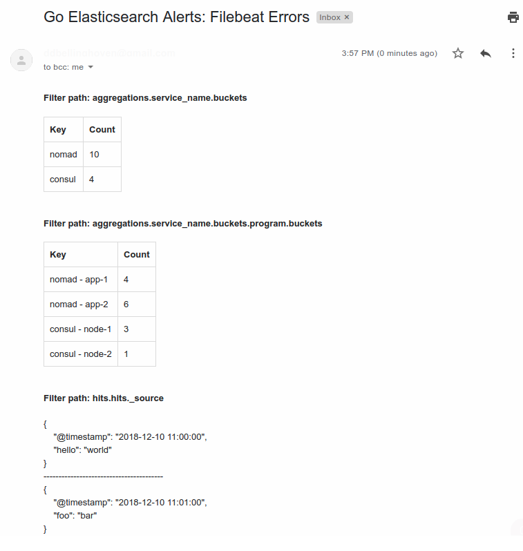

Setup¶
Before reading further, make sure that Go Elasticsearch Alerts is installed.
Configuration Files¶
This program requires some configuration files: a main configuration file and one or more rule configuration files.
Main Configuration File¶
The main configuration file is a JSON file which configures some of the general behavior of the program. Specifically, it is used to configure communication with Elasticsearch and distributed operation. The program will not operate without this file.
The program will look for the main configuration file at
/etc/go-elasticsearch-alerts/config.json by default. If you wish to keep
this file elsewhere, you can specify its location with the
GO_ELASTICSEARCH_ALERTS_CONFIG_FILE environment variable.
Example¶
{
"elasticsearch": {
"server": {
"url": "https://my.elasticsearch.com"
},
"client": {
"tls_enabled": true,
"ca_cert": "/tmp/cacert.pem",
"client_cert": "/tmp/client_cert.pem",
"client_key": "/tmp/client_key.pem"
}
},
"distributed": true,
"consul": {
"consul_lock_key": "go-elasticsearch-alerts/leader",
"consul_http_addr": "http://127.0.0.1:8500"
}
}
Main File Parameters¶
elasticsearch (Elasticsearch:
<nil>) - Configures how the program communcates with Elasticsearch. See the Elasticsearch section for more details. This field is required.distributed (bool:
false) - Whether this application will be run in a distributed fashion. If this is set totruethen theconsulfield will also be required since this application uses the lock feature of HashiCorp’s Consul service for synchronization between nodes. This field is optional. For more information on distributed operation, see the distributed usage section.consul (Consul:
<nil>) - Configures the Consul client. The program will use this client to communicate with your Consul server for synchronization between nodes. This field is required ifdistributedistrue.
elasticsearch Parameters¶
server (Server:
<nil>) - Specifies information pertaining to your Elasticsearch server. See the Server section for more information. This field is always required.client (Client:
<nil>) - Configures the HTTP client with which the program will communicate with Elasticsearch. See the Client section for more information. This field is always required.state_template (StateTemplate:
<nil>) - Configures the various settings for the backing state index in Elasticsearch. See the StateTemplate section for more information. This field is optional.
consul Parameters¶
Note: All of these values should be strings. For example, even if the value
is technically a Boolean field such as true, you should provide a string
(e.g. "true").
consul_lock_key (string:
"") - The name of the key to be assigned to the Consul lock. This field is always required.consul_http_addr(string:"") - The URL of your Consul server. This field is always required.consul_http_token (string:
"") - The API access token required when access control lists (ACLs) are enabled. This field is optional.*consul_http_ssl (string:
"false") - A boolean value (default is false) that enables the HTTPS URI scheme and SSL connections to the HTTP API. This field is optional.*consul_http_ssl_verify (string:
"") - A boolean value (default true) to specify SSL certificate verification; setting this value to false is not recommended for production use. This field is optional.*consul_cacert (string:
"") - Path to a CA file to use for TLS when communicating with Consul. This field is optional.*consul_capath (string:
"") - Path to a directory of CA certificates to use for TLS when communicating with Consul. This field is optional.*consul_client_cert (string:
"") - Path to a client cert file to use for TLS when verify_incoming is enabled. This field is optional.*consul_client_key (string:
"") - Path to a client key file to use for TLS when verify_incoming is enabled. This field is optional.*consul_tls_server_name (string:
"") - The server name to use as the SNI host when connecting via TLS. This field is optional.*
*This field can be specified using its corresponding environment variable instead. The environment variable takes precedence.
server Parameters¶
url (string:
"") - The URL of your Elasticsearch instance. This field is always required.
Additionally, if you need to authenticate Elasticsearch requests, you can set
the username and password with the GO_ELASTICSEARCH_ALERTS_ES_USERNAME and
GO_ELASTICSEARCH_ALERTS_ES_PASSWORD environment variables, respectively.
These will be included in a basic authentication header with every request
sent to your Elasticsearch server.
client Parameters¶
tls_enabled (bool:
false) - Whether the application should use TLS when communicating with your Elasticsearch server. This field is optional.ca_cert (string:
"") - Path to a PEM-encoded CA certificate file on the local disk. This file is used to verify the Elasticsearch server’s SSL certificate.client_cert (string:
"") - Path to a PEM-encoded client certificate on the local disk. This file is used for TLS communication with the Elasticsearch server.client_key (string:
"") - Path to an unencrypted, PEM-encoded private key on disk which corresponds to the matching client certificate.server_name (string:
"") - Name to use as the SNI host when connecting via TLS.
state_template Parameters¶
ilm_policy_name (string:
"") - The name of an Elasticsearch ILM policy to be applied to the state index settings. It must already exist in Elasticsearch and is not created by this application. It is optional.
Rule Configuration File¶
The rule configuration files are JSON files which define your alerts. The
program will look for the rule configuration files in the
/etc/go-elasticsearch-alerts/rules directory by default. If you wish to
keep these files in a different directory, you can specify this directory
with the GO_ELASTICSEARCH_ALERTS_RULES_DIR environment variable. All of
these files should be valid JSON and their file names should have a .json
extension. There must be at least one rule for the program to operate.
Example¶
{
"name": "Filebeat Errors",
"index": "filebeat-*",
"schedule": "@every 10m",
"body": {
"query": {
"bool": {
"must": [
{ "query_string" : {
"query" : "*",
"fields" : [ "system.syslog.message", "message" ]
} }
]
}
},
"aggs": {
"hostname": {
"terms": {
"field": "system.syslog.hostname",
"min_doc_count": 1
}
}
},
"size": 20,
"_source": "system.syslog"
},
"body_field": "hits.hits._source",
"filters": [
"aggregations.service_name.buckets",
"aggregations.service_name.buckets.program.buckets"
],
"conditions": [
{
"field": "aggregations.pipelines.queue.buckets.queue_usage.value",
"quantifier": "any",
"gt": 0.3
}
],
"outputs": [
{
"type": "slack",
"config" : {
"webhook": "https://hooks.slack.com/ASDFASDF",
"text": "New errors",
}
},
{
"type": "email",
"config": {
"to": [
"you@example.com"
]
"from": "me@example.com",
"host": "smtp.gmail.com",
"port": 587
}
}
]
}
In the example above, the application would execute the following query
(illustrated as a cURL request below) to Elasticsearch every ten minutes,
group by hits.hits._source, aggregations.service_name.buckets, and
aggregations.service_name.buckets.program.buckets, and write the results
to Slack and local disk.
$ curl http://https://my.elasticsearch.com/filebeat-*/_search \
--header "Content-Type: application/json" \
--data '{
"query": {
"bool": {
"must": [
{ "query_string" : {
"query" : "*",
"fields" : [ "system.syslog.message", "message" ]
} }
]
}
},
"aggs": {
"hostname": {
"terms": {
"field": "system.syslog.hostname",
"min_doc_count": 1
}
}
},
"size": 20,
"_source": "system.syslog"
}'
Rule File Parameters¶
name (string:
"") - The name of the rule (e.g."Filebeat Errors"). This field is required.index (string:
"") - The index to be queried. This field is required.schedule (string:
"") - When the query should be executed. This should be a cron string. This program uses github.com/robfig/cron to parse the cron schedule, so please refer to it for specifics on how to write a proper cron schedule.body (JSON object:
<nil>) - The body of the search query request. When the job is triggered, the program will pass this exact JSON as data in the request to the<index>/_searchendpoint. The value of this field will dictate the structure of the Elasticsearch response data and therefore will dictate the set of potential values for thefiltersandbody_fieldsections. It is recommendeded that you manually run this query (for an example, see the cURL request above) and understand the structure of the response data before setting thefiltersandbody_fieldsections.filters ([]string:
[]) - How the response to this query should be grouped. How the group data will be presented depends on the output method(s) used. More information on this field is provided in the filters section.body_field (string:
"hits.hits._source") - The field on which to group the response. The elements of the response data that match the value of this field will be stringified and concatenated before being sent to the provided output(s). This field is optional. If not specified, the program will group by the fieldhits.hits._sourceby default. More information on this field is provided in the filters section.conditions ([]Conditions:
[]) - The criteria that must be met for the alert to be reported. Note that all conditions have an implicit “and” (i.e. all conditions must be satisfied for the alert to trigger). See the Conditions section for more details. This field is optional.outputs ([]Output:
[]) - The media by which alerts should be sent. See the Output section for more details. At least one output must be specified.
conditions Parameters¶
The conditions parameter of the rule file allows you to ensure alerts
are only reported when the given conditions are satisfied. You may include
as many or as few conditions as you wish. This field is optional.
field (string:
"") - The path to the field of the JSON response that will be tested against the given criteria. This should point to only primitive values, including strings, numbers, or booleans (e.g. the last element of the path should be a primitive and not an object or array). This field is required.quantifier (string:
"any") - How the matching values should be compared. Accepted values include"all","any", and"none". This defaults to"any".eq (string or number:
nil) - The matching values should equal this value. This field is optional.ne (string or number:
nil) - The matching values should not equal this value. This field is optional.lt (number:
nil) - The matching values should be less than this value. This field is optional.le (number:
nil) - The matching values should be less than or equal to this value. This field is optional.gt (number:
nil) - The matching values should be greater than this value. This field is optional.ge (number:
nil) - The matching values should be greater than or equal to this value. This field is optional.
For example, assume we are using the rule given in the example above. Also assume that when the query runs, Elasticsearch returns the following response:
{
"took" : 4863,
"timed_out" : false,
"_shards" : {
"total" : 7,
"successful" : 7,
"skipped" : 0,
"failed" : 0
},
"hits" : {
"total" : {
"value" : 376,
"relation" : "eq"
},
"max_score" : null,
"hits" : [ ]
},
"aggregations" : {
"pipelines" : {
"doc_count" : 3384,
"queue" : {
"doc_count_error_upper_bound" : 0,
"sum_other_doc_count" : 0,
"buckets" : [
{
"key" : "main",
"doc_count" : 1128,
"queue_size" : {
"value" : 3.8679811209E10
},
"max_queue_size" : {
"value" : 1.211180777472E13
},
"queue_usage" : {
"value" : 0.3193562177376465
}
},
{
"key" : "message-queues",
"doc_count" : 1128,
"queue_size" : {
"value" : 3.632980257E9
},
"max_queue_size" : {
"value" : 1.211180777472E13
},
"queue_usage" : {
"value" : 0.029995359277273426
},
"queue_empty" : {
"value" : true
}
}
]
}
}
}
}
From this response, the process will gather the fields at the path defined
in the condition at aggregations.pipelines.queue.buckets.queue_usage.value.
This includes the set [0.3193562177376465, 0.029995359277273426]. It will
then check if any of these values are greater than 0.3. Since one of these
values is indeed greater than 0.3, the alert will be sent to the output
channel(s) defined in the rule.
outputs Parameters¶
The outputs parameter of the rule file specifies where the results of the queries should be sent. Each rule should have at least one output. Currently, three output types are supported: Slack, email, Amazon AWS SNS, and file. The exact specifications of this field will depend on the output type.
type (string:
"") - The type of output. Currently, only"slack","file", and"email"are supported. This field is always required.config (JSON object:
<nil>) - Configurations specific to the output type. This field is alwyas required.
Slack Output Parameters¶
webhook (string:
"") - The Slack webhook where error alerts will be sent. This field is required.text (string:
"") - Text to be sent with the Slack message.
You can find an example of what the Slack message looks like here.
Email Output Parameters¶
host (string:
"") - The SMTP server host (e.g.smtp.gmail.com). This field is required.port (int:
0) - The SMTP server port (e.g.587for Gmail). This field is required.from (string:
"") - The “from” email address. This field is required.to ([]string:
[]) - The “to” addresses to which email alerts will be sent. At least one address is required.username (string:
"") - The username with which the SMTP client will authenticate to the host. If you do not wish to specify the username in the configuration file, you can set the password using theGO_ELASTICSEARCH_ALERTS_SMTP_USERNAMEenvironment variable. This field is optional.password (string:
"") - The password with which the SMTP client will authenticate to the host. If you do not wish to specify the password in the configuration file, you can set the password using theGO_ELASTICSEARCH_ALERTS_SMTP_PASSWORDenvironment variable. This field is optional.
You can find an example of what the email message looks like here.
AWS SNS Output Parameters¶
region (string:
"") - The Amazon AWS region to send where your SNS topic exists. This field is required.topic_arn (string:
"") - The SNS topic to which new alerts will be published. This field is required.template (string:
"") - The message template that will define what alert messages will look like. This template is based on Go templates. It allows you to interpolate an array of alert records into the template to expose custom message formatting for your alerts. Note that Sprig template functions are available for use in your template. This field is required.
IMPORTANT: If sending SMS messages with your SMS topic, a strict 140-character limit is enforced. Please take this into consideration when writing your message template.
As an example, let’s say you have this output method in one of your rule files:
{
"name": "Filebeat Errors",
...
"outputs:" [
{
"type": "sns",
"config": {
"region": "us-east-1",
"topic_arn": "AWS::SNS::Topic",
"template": "{{range .}}{{.Filter}}:\n{{range .Fields}}* {{.Key}}: {{.Count}}\n{{end}}\n{{end}}"
}
}
]
}
Let’s then say that a new alert comes in that matches this alert’s filter. It would pass the following struct to the alert method:
[]*alert.Record{
{
Filter: "foo.bar.bim",
Fields: []*alert.Field{
{
Key: "test-1",
Count: 2,
},
{
Key: "test-2",
Count: 4,
},
},
},
{
Filter: "abc.def.ghi",
Fields: []*alert.Field{
{
Key: "foo",
Count: 10,
},
{
Key: "bar",
Count: 11,
},
},
},
}
The alert handler would then render your template using this struct, resulting in the following message being published to your SNS Topic:
[Filebeat Errors]
foo.bar.bim:
* test-1: 2
* test-2: 4
abc.def.ghi
* foo: 10
* bar: 11
As a note, you do not have to have any templating logic in the template field
of your output configuration. For example, if you want all messages to be the
same when a new alert comes in, you can make a configuration like:
{
"name": "Filebeat Errors",
...
"outputs:" [
{
"type": "sns",
"config": {
"region": "us-east-1",
"topic_arn": "AWS::SNS::Topic",
"template": "New errors found"
}
}
]
}
File Output Parameters¶
file (string:
"") - The file to which alerts will be written. This field is required.
Filters¶
Filters are used to group the data that Elasticsearch responds to a query with. They are used to provide a brief summary of the response data.
For example, given the example above, assume that after the job triggers and executes the query Elasticsearch responds with the following data:
{
"hits": {
"hits": [
{
"_source": {
"@timestamp": "2018-12-10 11:00:00",
"hello": "world"
}
},
{
"_source": {
"@timestamp": "2018-12-10 11:01:00",
"foo": "bar"
}
}
]
},
"aggregations": {
"service_name": {
"buckets": [
{
"key": "nomad",
"doc_count": 10,
"program": {
"buckets": [
{
"key": "app-1",
"doc_count": 4
},
{
"key": "app-2",
"doc_count": 6
}
]
}
},
{
"key": "consul",
"doc_count": 4,
"program": {
"buckets": [
{
"key": "node-1",
"doc_count": 3
},
{
"key": "node-2",
"doc_count": 1
}
]
}
}
]
}
}
}
Upon receiving this JSON data, the program will group the data by
"aggregations.service_name.buckets" and
"aggregations.service_name.buckets.program.buckets". Additionally, it will
group the data by "hits.hits._source" (the default body_field value)
and then stringify and concatenate the matched hits. After these steps, it will
send the results via Slack and email as shown below.
Slack Output Example¶

Email Output Example¶
